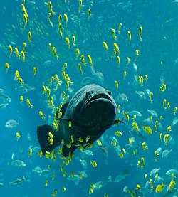

물고기또는 어류(魚類)는 척추동물아문에 속하는 동물의 하나이다. 척추동물 중에서 네발동물은 제외된다. 대체적으로 물 속에 살며 아가미로 호흡하며 지느러미로 움직이고 몸 표면이 비늘로 덮여 있으며 냉혈동물로 주위 온도에 영향을 받는다. 물고기는 지구상의 여러 수생 환경에서 분포하며, 그 서식지는 열대지방에서 극권, 내륙의 담수 지역에서 해수 지역, 또한 해양의 표층에서 깊은 바다에까지 이르는 등 다양하다. 어류 전체의 종 수는 25,000~31,000 정도이며, 이는 척추동물 전체의 과반수에 해당한다. 한국에서는 생선이라고 불리기도 하는데 이는 보통 음식으로 분류된 이름이다. 상업적이고 자급자족을 하는 어부들은 생선을 야생에서 직접 잡든지, 아니면 호수나 바다의 우리에서 길러낸다. 오락으로 낚시광들에게 많이 잡히며, 물고기 애호가들은 잡아서 키우기도 한다. 여러 세기에 걸쳐 물고기는 문화적인 역할도 담당해 왔다. 신이나 종교적 기호로서 추앙 받기도 하였고 예술, 책, 영화의 주제로도 쓰였다